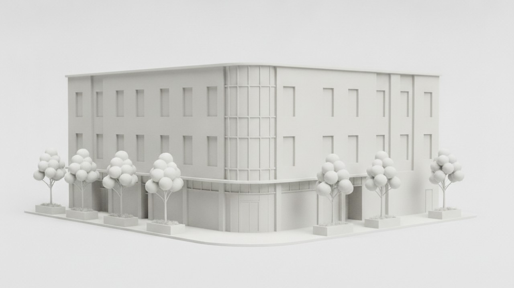
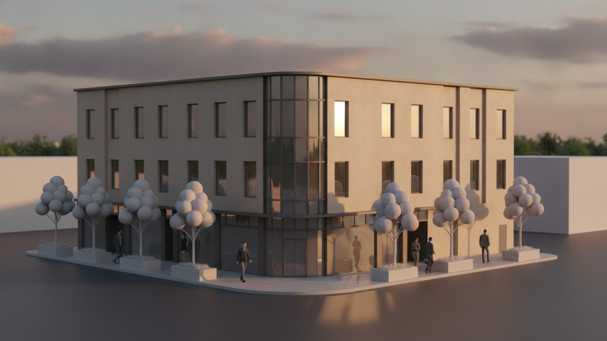
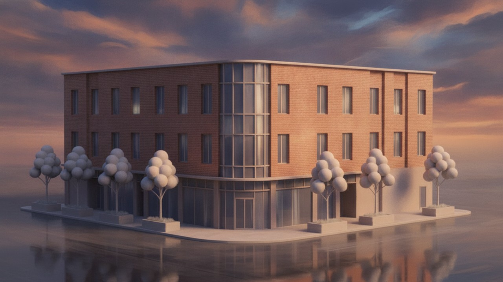
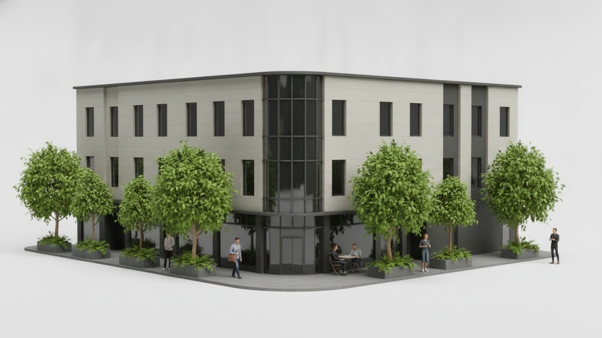
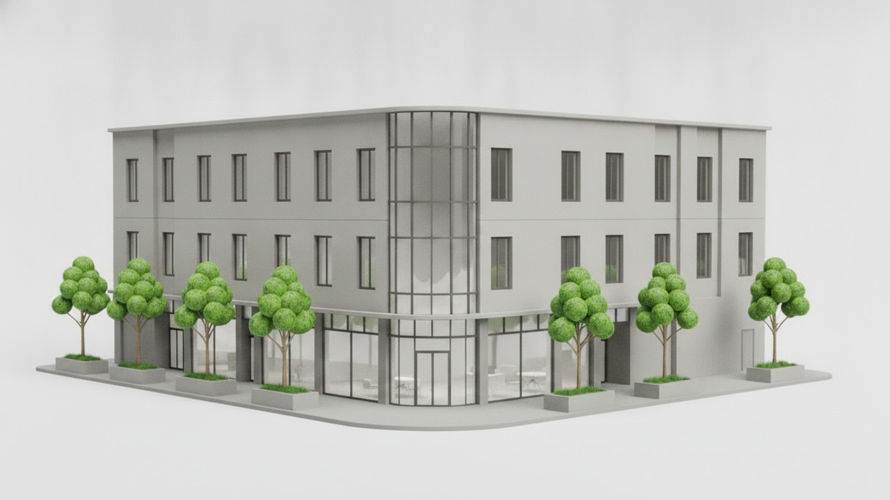
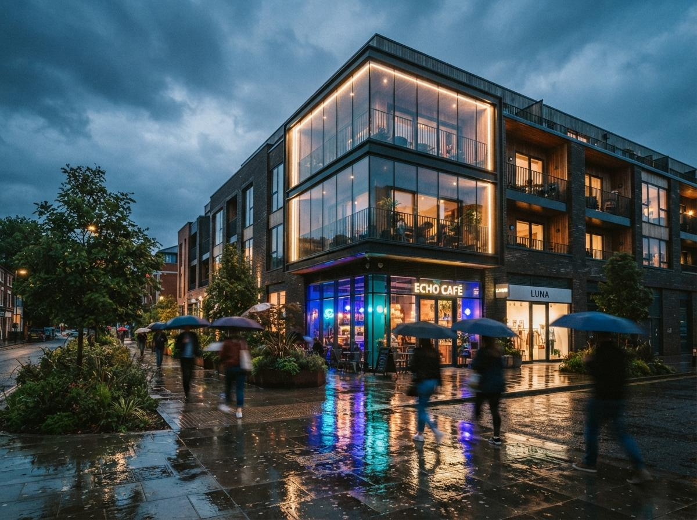
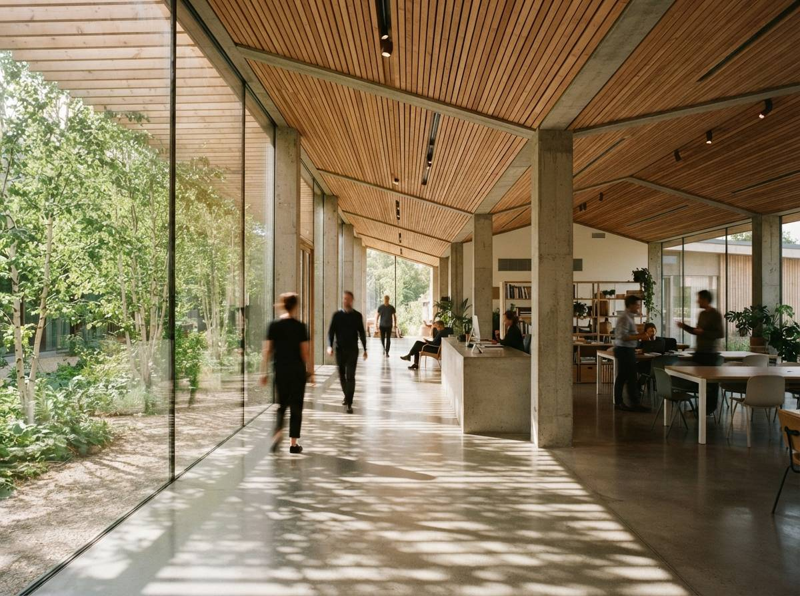

Every few weeks a new listicle stacks these four into a ranked table as if picking between them were a like-for-like choice. It isn't. Rendair AI is a turnkey renderer that eats geometry and hands back a photograph. PromeAI is a broad creative platform with an architecture corner. The Chaos AI Enhancer never renders anything from scratch — it polishes an image you already made in Enscape. And Stable Diffusion 3.5 isn't a product at all; it's an open model you assemble into a workflow.
So we did what we do with every comparison: we ran the same live project through each — a three-storey mixed-use scheme with a difficult glass corner, one client-approved cladding, a planted street edge, and one presentation view where the geometry was not allowed to move. Then we graded on the six axes we grade everything: brief fidelity, geometric coherence, material believability, lighting realism, controllability, and time-to-deliverable. The result is less a leaderboard than a map of which tool belongs on which job.
If two tools solve different problems, a single winner is not a finding. It's a category mistake with a score attached.
The same model, four categories
Rankings are easy to argue about in the abstract, so here is the argument made visual. Below is the shared model we described — the three-storey corner scheme with the glass return and the planted street edge — followed by the same view run through each of the four. Read them left to right, top to bottom: a turnkey photoreal pass, a concept-stage interpretation, a real-time render with an AI entourage polish, and a geometry-locked controlled output. Same building; four different jobs.





Illustrative renders produced in-house on one shared model to show how each category behaves — a turnkey generator, a concept tool, a real-time finisher, and a controlled open-model workflow. They demonstrate the difference in kind the table further down measures; they are not screen-grabs pulled from the four products. Click any image to enlarge.

Rendair AI
Upload OBJ, FBX, or SKP and Rendair runs the whole pipeline — lighting, materials, output — with no renderer knowledge required. The cleanest on-ramp of the four, and the one a non-technical team member can drive on day one.
What it's good at: speed and approachability. First passes come back in roughly 45 seconds, and the interior presets — "Warm Scandi," "Japandi Minimal," "Industrial Loft" — are real starting points rather than mood-board noise. The material-swap feature (click a surface, choose a new material) makes design-review iterations painless. On our interior test views, Rendair produced client-ready output on the first run.
Where it struggles: exteriors with real site context. Rendair's landscape and sky work reads procedural on aerials, and it's the tool most willing to quietly re-interpret a complex roofline. It's a renderer for firms who want output now and don't want to think about the engine — which is exactly its ceiling on high-control presentation frames.
PromeAI
A wide creative suite — sketch-to-image, relighting, background and outpainting, style transfer, short video — with architecture as one of many verticals. Broad and cheap to try; shallow where a project needs true geometric fidelity.
What it's good at: the front of the project. Feed PromeAI a loose hand sketch or a massing screenshot and it returns atmospheric concept directions fast and for almost nothing. For a charrette, a competition mood-set, or three quick "what if the facade were brick" options, it earns its place. The free tier means you can find out in an afternoon whether it fits your habits.
Where it struggles: control and accountability. Because architecture is a vertical rather than the whole product, PromeAI has no true geometry lock — it interprets, it doesn't preserve. Ask it to keep everything and change only the paving and it will happily redraw a window while it's there. It's a concept tool that occasionally makes a presentation image, not a presentation tool.
The Chaos AI Enhancer
A finishing pass that refines the parts of a real-time Enscape render that look synthetic — vegetation, people, environmental detail — without a re-render, and deliberately leaves the architecture alone.
What it's good at: the review meeting. Because it doesn't recompute the scene, you keep working in real time and apply the pass only on the views you're about to present. Ten seconds of enhancement buys a visible step up in perceived quality, mostly by fixing Enscape's cardboard foliage and stiff people. The restraint is the point — it goes after the three things clients always notice and touches nothing else.
Where it struggles: anything upstream. It's a polish layer, not a quality transform. Bad lighting or weak composition survives it untouched, and it only exists for people already inside an Enscape workflow. Judged as a rendering tool it's incomplete; judged as what it is — a last-15% finisher for real-time output — it's a clean win.

Stable Diffusion 3.5
Not a product — a model you run yourself, typically through ComfyUI. Maximum control and privacy, zero per-image cost, and no cloud dependency. In exchange you own the setup, the hardware, and the learning curve.
What it's good at: control and confidentiality. Paired with ControlNet — depth, canny, or line conditioning — SD 3.5 holds your massing and openings tightly, and because it runs on your own machine, no client model ever leaves the building. At volume it's the cheapest option per image, and it's the only one you can extend with custom LoRAs to render in your studio's own look. Nothing else on this list gives a firm this much of the pipeline.
Where it struggles: everything before the first good image. Raw SD 3.5 hallucinates architecture; geometry adherence is entirely a function of the workflow you build around it. It needs a capable GPU (or a rented one), a front end, and someone willing to tune. There are no architecture presets waiting for you. It rewards a technical firm and quietly wastes everyone else's afternoon.
The head-to-head table
| Dimension | Rendair AI | PromeAI | Chaos AI Enhancer | Stable Diffusion 3.5 |
|---|---|---|---|---|
| Category | Turnkey renderer | General creative tool | Post-process finisher | Open model / DIY |
| Setup | None — web app | None — web app | Needs Enscape | GPU + workflow build |
| Geometry control | Good (some drift) | Weak — interprets | Perfect (leaves it alone) | Excellent via ControlNet |
| Best stage | Design → presentation | Concept / early | Final polish | Any, once built |
| Speed to first result | ~45s | Seconds | ~10s pass | Slow to stand up, fast after |
| Cost model | $49–$119/mo | Free tier + paid | Free with Enscape | Free weights + compute |
| Privacy (local) | Cloud | Cloud | Local render, cloud AI | Fully local |
| Learning curve | Minimal | Minimal | Low | Steep |
So which do you actually buy?
Stop thinking "best tool" and start thinking "best for the job in front of me." Here's how we'd route it.
Upload the model, get a photoreal image, hand the login to a junior. Strongest on interiors; watch it on complex exteriors.
Sketch-to-render and style exploration on a free tier. Perfect for charrettes and options; don't ask it to hold geometry.
You've likely already paid for it. Turn it on for the views you're presenting and stop shipping video-game foliage.
Build a ControlNet workflow once and you own a renderer no one can price-hike or read your models. Budget the setup honestly.
The verdict
The most useful thing we can tell you is that most working practices end up running two of these, not one: a turnkey generator for speed (Rendair or PromeAI at the concept end), and either the Chaos Enhancer or an SD 3.5 workflow at the control end. The tools converge on similar-looking images; where they diverge — and where your money actually goes — is setup, control, and who keeps the keys to your geometry.
That's the aggregator's honest read. We don't take affiliate placements and we tested each on the same live model, so the ranking you came for is really a routing table: pick the row that matches your next deadline.
All four evaluated by Vista Studios against the same source model. No affiliate relationships or sponsored placements. Prices and features current as of July 2026 and change often — verify before you buy.